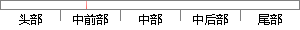

其中，简要介绍了本文中声纹识别的两种方式。
片段位置图

相似结果|
相似片段 1：的人与人面对面的测评方式，更改为人机界面交互的语音声纹识别方式进行测评。本文研究的主要内容章节安排如下：第一章， 简要概述本课题研究背景、声纹识别的发展现状及应用范围；第二章， 介绍了人类语音学、语音
|
※ 片段修改建议 ※
近似词参考：- 其中：此中 个中
- 简要：扼要
- 介绍：先容
- 别的：此外 另外 其它 其余
- 方式：体例 体式格局 方法
系统自动生成语句：此中，扼要先容了本文中声纹识此外两种体例。
注：本片段修改建议为系统自动生成，仅供参考。